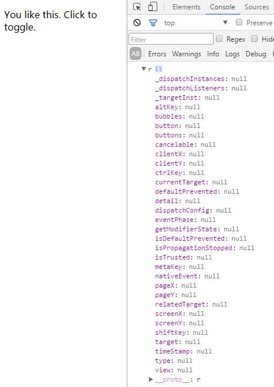
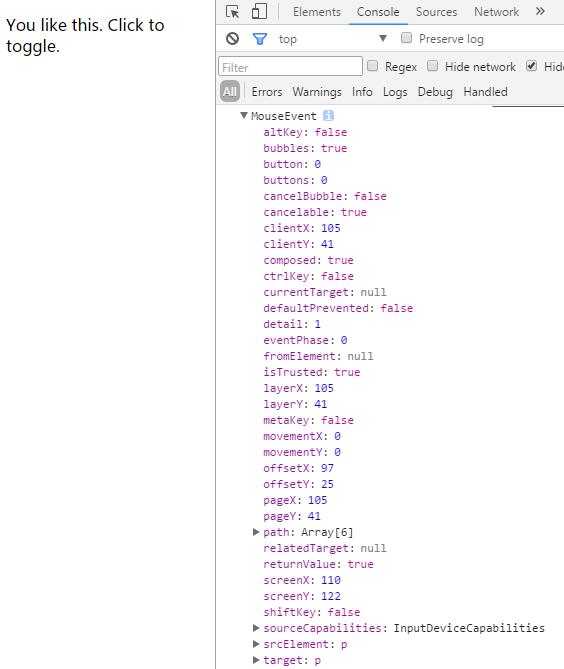
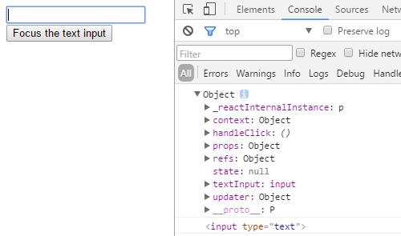

react入门教程二
react事件
由于react的虚拟DOM模式，react对所有的事件也都做了专门的处理和优化，官方的说法是引入了虚拟事件对象，将浏览器的事件进行了封装，有着浏览器本地事件西安通的属性和方法，但是没有兼容问题。听起来不错，回到我们之前state的demo，handleClick(e){}加一个console.log(e)来打印一下这个点击事件：

这里可以看到我们打印出来的全部是空，这是因为react给我们做了处理，把不需要的值全部隐藏了。现在我们来改一下console.log(e.target) :

可以看到target已经被打印出来了。如果你有时候需要的是本地的event的话可以使用e.nativeEvent来调用：

这里就是浏览器原生的event事件，但是需要注重浏览器兼容性。所以一般情况下最好使用react封装好的event事件，react支持的完整事件列表可以在官方文档查看，这里不再一一列举。
tip：如果需要阻止默认的事件，比如form表单的默认提交，a标签的href... 必须使用e.preventDefault() 。而需要阻止事件冒泡则需使用e.stopPropagation()。
React事件机制不同于我们以往的js事件，为提高效率，它对事件做了二次处理，将所有项目中注册的事件全部代理（delegate）到顶层的document上，当你点击某个DOM的时候，它会找到这个DOM和其Component，并冒泡到找到对应的事件并触发。
比如我们经典的 ul li 结构，传统js使用事件委托将事件绑定在ul上，而现在使用react只需要在ul上绑一个click事件，每次点击ul里面的元素都会冒泡并触发到ul的事件上去。但是要注意如果你在ul里面再绑定一个事件，同时不使用stopPropagation去阻止这个冒泡事件，那他会一直执行到最顶层的事件上去。
想要深入了解React事件机制？相信这篇博客会对你有所帮助——React源码解读系列 -- 事件机制
Refs & 真实DOM
由于react使用虚拟DOM的结构，所有的页面变动都先在虚拟DOM上处理，只有当他们真正插入到文档中才会转化成真实DOM，react正是通过这样的机制来减少DOM操作从而提高页面的性能。
但是有时候我们确实有获取DOM的需求，前面在学习事件的时候我们使用e.target可以获取到真实的DOM。
而同时react也给我们提供了refs 来处理类似的情况。ref在react中是一个特殊的属性，它可以是一个回调函数也可以是一个字符串。如果你查找国内的资料你会发现几乎所有人用的都是ref的字符串属性，但是在最新版（V15.4.2）的react文档中，ref的字符串属性被称为’Legacy API‘ ，官方强调字符串的ref存在一些问题，并且很可能在未来的版本中将其移除。
我们先来看一下官方的demo：
var MyComponent = React.createClass({
handleClick: function() {
this.textInput.focus();
console.log(this);
console.log(this.textInput)
},
render: function() {
return (
<div>
<input type="text" ref={(input) => { this.textInput = input; }} />
<input type="button" value="Focus the text input" onClick={this.handleClick} />
</div>
);
}
});
ReactDOM.render(
<MyComponent />,
document.getElementById('example')
);
ref的回调函数会在组件创建或者重新渲染时立即执行，回调函数的参数即为当前组件的真实DOM，我们可以立即使用这个DOM或者将其保存以备后用。
上面代码中输入框的ref使用es6语法直接在组件中创建了一个回调函数，这个函数将参数input保存到this.textInput中，我这里把 this 和 this.textInput 打印出来来帮助大家更好去理解：

这里this指向ReactElement，即当前的的react组件，通过回调函数往this里添加了textInput对象。通过下面的this.textInput就可以看到textInput为该组件的原生DOM，我们通过ref的回调函数将该DOM存在this中，方便后面随时调用。
简单的ref回调我们可以直接写在标签中，如果复杂的话我们可以将其抽出为一个函数，在标签中通过 ref={this.funtionName} 的形式调用。
同时我这里也有一个string refs的demo，虽然现在有很多人这样用，但是我们要尽量避免这样的写法：
var MyComponent = React.createClass({
handleClick: function() {
this.refs.myTextInput.focus();
},
render: function() {
return (
<div>
<input type="text" ref="myTextInput" />
<input type="button" value="Focus the text input" onClick={this.handleClick} />
</div>
);
}
});
ReactDOM.render(
<MyComponent />,
document.getElementById('example')
);
这里给ref定义一个字符串，通过refs获取到页面所有的ref，再通过ref的字符串定位到该DOM，这样操作确实方便很多，所以这个方法被广为流传，但是建议有使用这样方法的童鞋最好慢慢抛弃这种写法。
tips：有些童鞋可能网上查找资料会看到getDOMNode() or findDOMNode() 方法，在早期react中确实存在这些方法结合ref来获取DOM，但是后来React拆分出ReactDOM后这些方法被归到ReactDOM 的方法中，直接在react中是不能使用的。
react表单
在开始之前我们先看一个例子：
var Form = React.createClass({
render: function() {
return (
<input type='text' value='这是一个输入框'/>
)
}
})
ReactDOM.render(
<Form/>,
document.getElementById('example')
);
乍一看是不是和我们平时HTML的写法基本一样，但是一运行你就会发现无论如何你改变不了input中的值，键盘的输入对它没有任何影响！
react官方将带有value的表单定义为受限组件 ，即该组件受限制于value值，他将永远等于value的值。当然，不代表我们就不能定义表单的默认值了，官方给出了两种解决办法：
1，使用defaultValue。既然有受限组件，那就存在不受限组件。官方定义为不设置value的组件就是一个不受限组件，而不受限组件可以实时响应用户的输入将其反映到元素上。所以react就给组件定义了defaultValue来给组件设置一个非空的初始值，而对于radio，checkbox则有对应的defaultCheckd属性来代替checkd：
<input type='text' defaultValue='这里是默认值，也可以使用state'/>
我们可以给input定义ref的回调来获取输入的值：
<input type='text' ref={(input) => { this.textInput = input; }} defaultValue='这里是默认值，也可以使用state'/>
然后通过事件获取this.textInput.value。
比如我们一个页面有很多输入框，可以给他们分别定义ref，然后通过submit按钮的提交事件来一次性全部获取所有的输入值。
tip：如果我们需要阻止默认的表单提交事件，需要使用e.preventDefault()，这一点我们在之前的事件里提到过。 ( ) => { } 为ES6语法，它表示为 function( ) { } 。
2，对于使用state来给组件设置初始值的，可以给组件绑定onChange事件，通过onChange来实时获取用户输入，动态的改变state的值。这样虽然组件受限于value，但是value的值发生了变化，那么组件的值也就跟着变化：
var Form = React.createClass({
getInitialState:function(){
return {
inputValue: 'input',
}
},
handleInput:function(e) {
this.setState({inputValue: e.target.value});
},
render: function() {
return (
<input type='text' value={this.state.inputValue} onChange={this.handleInput}/>
)
}
})
ReactDOM.render(
<Form/>,
document.getElementById('example')
);
以上是使用e.target.value来获取输入值来刷新state，当然你也可以使用ref来获取。
如果页面中有很多表单，但是我们又不想使用上面的defaultValue+ref，或者我们需要在用户输入的时候就获取输入值来检查。岂不是每一个表单组件都要定义一个onChange事件？
官方也考虑到这种问题，所以给我们提供了一个更好的解决方案：
var MyComponent = React.createClass({
getInitialState: function() {
return {
isGoing: true,
numberOfGuests: 2
};
this.handleInputChange = this.handleInputChange.bind(this);
},
handleInputChange(event) {
const target = event.target;
const value = target.type === 'checkbox' ? target.checked : target.value;
const name = target.name;
this.setState({
[name]: value
});
},
render: function() {
return (
<form>
<label>
Is going:
<input
name="isGoing"
type="checkbox"
checked={this.state.isGoing}
onChange={this.handleInputChange} />
</label>
<br />
<label>
Number of guests:
<input
name="numberOfGuests"
type="number"
value={this.state.numberOfGuests}
onChange={this.handleInputChange} />
</label>
</form>
);
}
});
ReactDOM.render(
<MyComponent />,
document.getElementById('example')
);
通过一个onChange事件来解决所有的表单，是不是很酷！
tip: [name] 为ES6语法，它表示在对象中，name为一个变量。
tip：<textarea> 常规设置默认值采用 <textarea>这里是默认值</textarea> ，<select> 常规设置默认值是在 <option> 中添加selected，而这对于React来说会显得很奇怪，且不方便在后续的使用中来更新默认值。所以React中所有表单的默认值设置全部使用value（defaultValue）来定义，详细说明参见官方文档。
生命周期
组件的生命周期分为三种：
- Mounting：已插入真实 DOM
- Updating：正在被重新渲染
- Unmounting：已移出真实 DOM
react为每个状态提供两种处理函数，will在函数状态之前调用，did则在函数状态之后调用：
- componentWillMount()
- componentDidMount()
- componentWillUpdate(object nextProps, object nextState)
- componentDidUpdate(object prevProps, object prevState)
- componentWillUnmount()
此外还有三种特殊状态的处理函数：
- constructor()：组件调用之前的构造函数，早于componentWillMount()，常用于声明props和state
- componentWillReceiveProps(object nextProps)：已加载组件收到新的参数时调用
- shouldComponentUpdate(object nextProps, object nextState)：组件判断是否重新渲染时调用
目前为止，我们所有的demo都是在单个页面通过外链react和babel的方式来演示。但是实际的开发过程中基本不会使用这种方式，接下来我们通过一个简单的练习学习在实际的开发环境中使用react，同时也对上面的内容做一个巩固。
—— 2017年3月22日